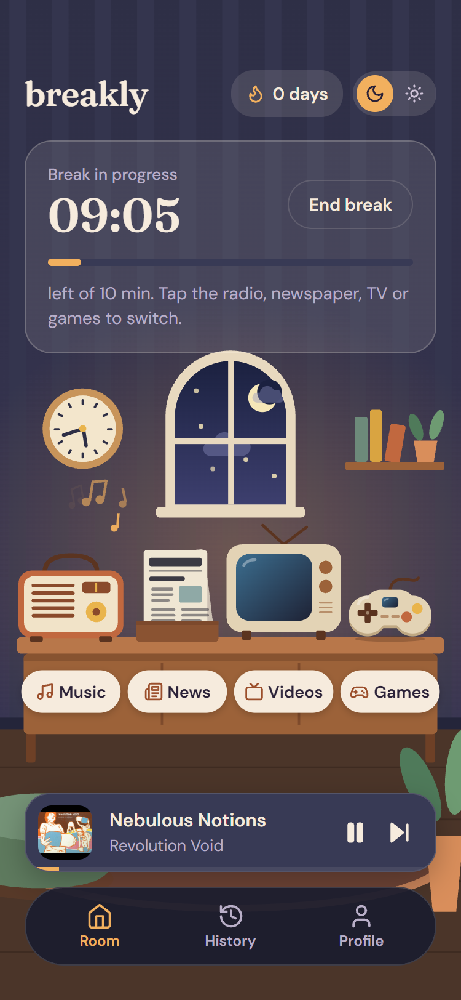
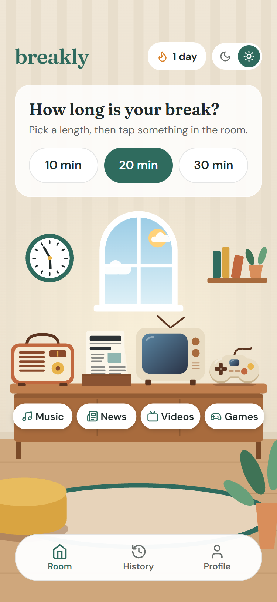
HCMUT · CO3043 · CC02
breakly
Small breaks,
with a stopping point.
Trần Phước Sang · Trần Ngọc Bảo
Team
Meet the team
2353044
Trần Phước Sang
Backend, architecture, report
2352109
Trần Ngọc Bảo
UI/UX, research, testing
Instructor
Phan Trần Minh Khuê
Mobile Application Development
01 · Context
What people open in a short break
YouTube · Spotify
VnExpress
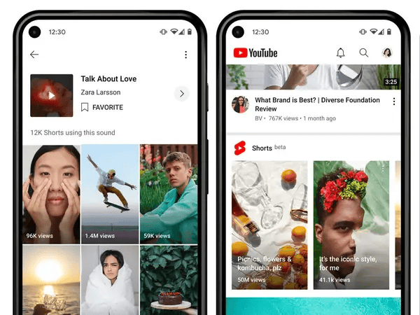
Fun, but no end
Autoplay and endless feeds.
Forest · Opal
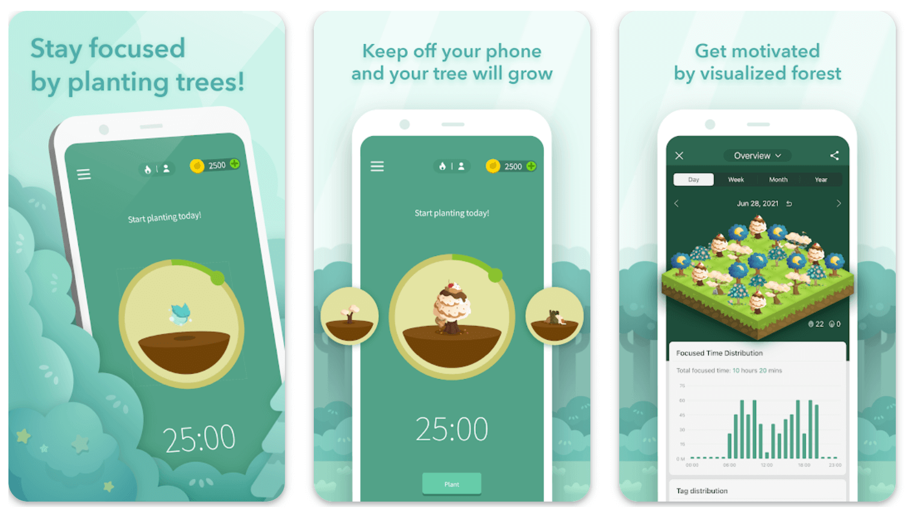
A limit, but nothing to enjoy
They work by blocking.
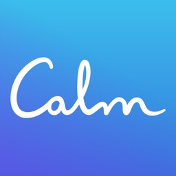
Calm
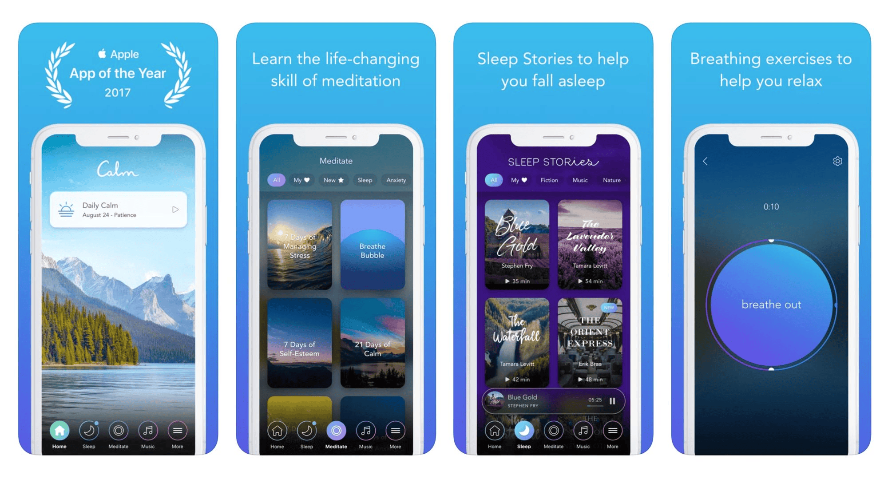
Calm, but not your content
Meditation, not music and news.
01 · Context
A 5-minute break quietly becomes an hour
18 h 36 m
a week scrolling feeds
39.7%
scroll to fill spare time
Source: Digital 2026 Global Overview Report
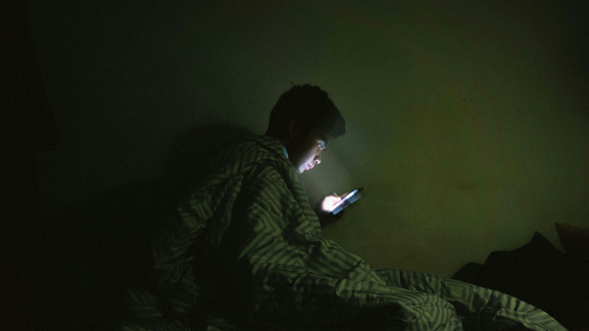
Now: one more video…
Goal: a break that ends
01 · Context
Our idea: a break with an end
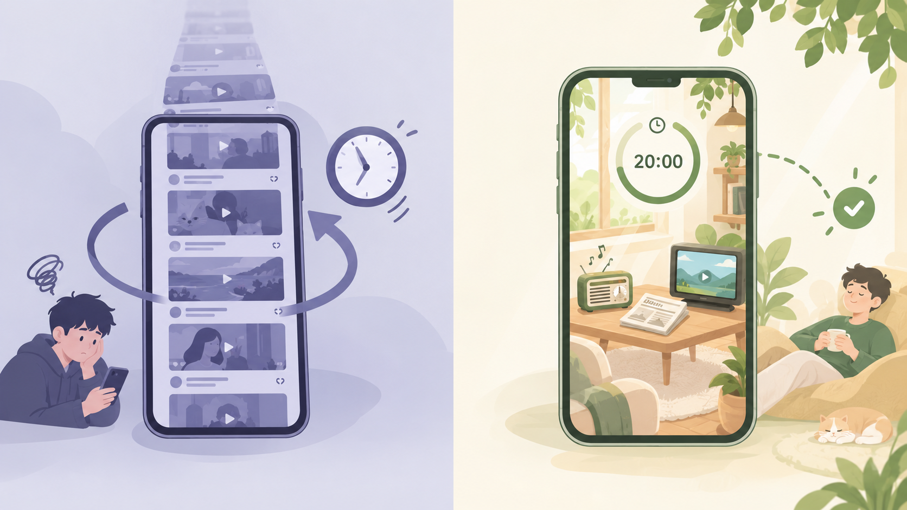
1
10 · 20 · 30 minutes
2
One calm room
3
Content that ends
4
A daily streak
Two taps to start: pick a length, tap an object.
01 · Context
Who it is for
Primary
Students and young professionals
Enjoy a short break, stop on time.
Secondary
Content providers
Content used within its licence.
Secondary
Platforms and app stores
No sensitive permissions, keys on the server.
Secondary
Instructor and evaluators
Traceable requirements, tests, a live demo.
02 · Requirements
Functional requirements
40 FRs
20 Must · 20 Should
4
Account
Guest or signed in
7
Session
Countdown, auto end
3
Space
Room and two themes
7
Music
8 stations, MP3 offline
5
News
Read in the app
3
Videos
YouTube, 10 per break
8
Progress
Summary, history, settings
3
Game Corner
New · one puzzle a day
02 · Requirements
Non-functional requirements
| Quality | Measurable target |
|---|---|
| Response time | Content or a loading state within 3 s |
| Background | Timer within ±2 s; music plays with the screen locked |
| Offline | Error with Retry within 10 s; sessions upload later |
| Security | BCrypt passwords, token in secure storage, HTTPS |
| Permissions | No location, contacts, camera, mic or notifications |
| Platform | iOS 16+ and Android 8+, portrait |
| Battery and data | Music lists cached 10 min; downloads play offline |
| Accessibility | Text up to 130%, contrast 4.5 : 1 |
03 · Design
14 use cases
1 user
4 external systems
2 «extend»
Jamendo, VnExpress RSS, YouTube and NYT Games are «system» actors.
The countdown and the automatic end are steps, not use cases.
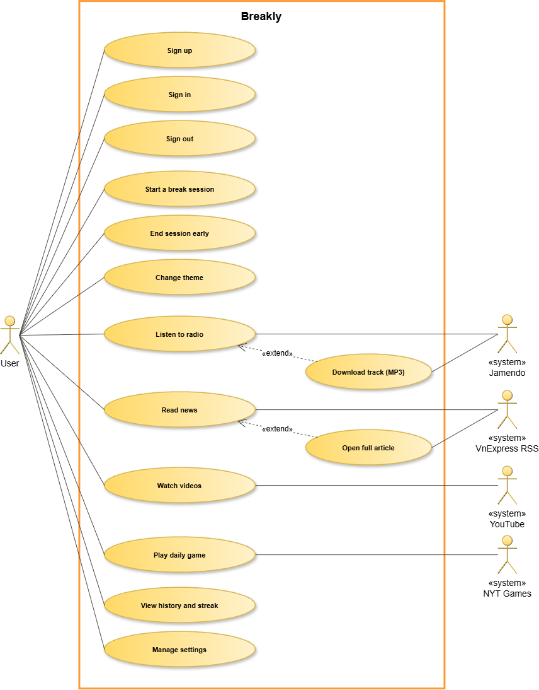
03 · Design
Architecture
Mobile app
Expo · React Native
Timer, music player, in-app browsers
REST + JWT
Backend
Spring Boot 4
Accounts, history, streak, catalogue
JPA
Database
PostgreSQL
6 tables, Flyway
LOADED DIRECTLY BY THE APP
YouTube
NYT Games
Articles
MP3 files
FETCHED AND CACHED BY THE BACKEND
Jamendo · 10 min
VnExpress RSS · 5 min
03 · Design
Technology stack
Mobile
Expo SDK 58
React Native · TypeScript
State
Zustand
TanStack Query
Media
expo-audio
WebView for YouTube, news, games
Backend
Spring Boot 4
Java 21 · REST · JWT
Database
PostgreSQL
Flyway · Spring Data JPA
Testing
JUnit 5
Testcontainers · GitHub Actions
03 · Design
Sequence: one break
User
Home Space
Session store
Music player
Backend API
1 · Tap the radio
2 · Save end time
Every second: end − now
3 · 00:00 → stop
4 · Save the session
5 · Saved
6 · Show summary
03 · Design
Data: six tables
users
Email, BCrypt hash
refresh_tokens
Only a SHA-256 hash
user_preferences
Theme, duration, volume
sessions
Unique per device ID: no duplicate uploads
game_plays
Unique per game and day
content_items
Tags, feeds, game links
Highlighted: the two unique keys that make retries safe. Schema versioned by Flyway V1–V6.
04 · Product
One break, start to finish
1
Pick, tap
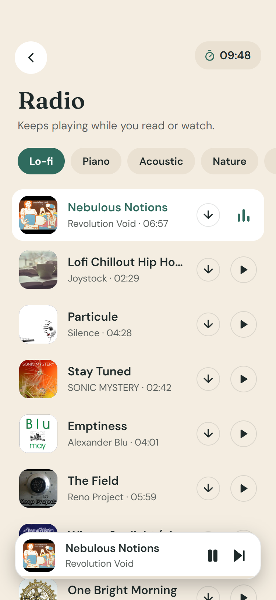
2
Music
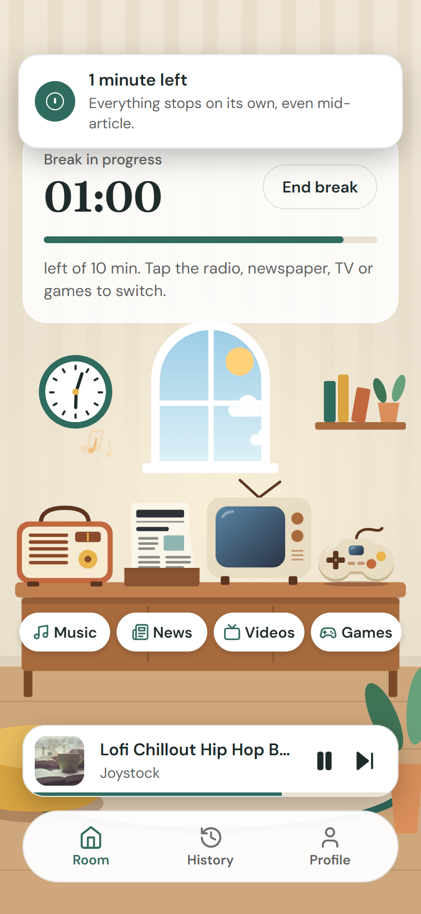
3
1 min left
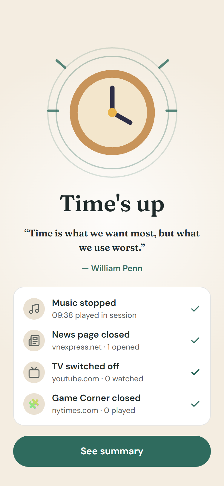
4
Time’s up
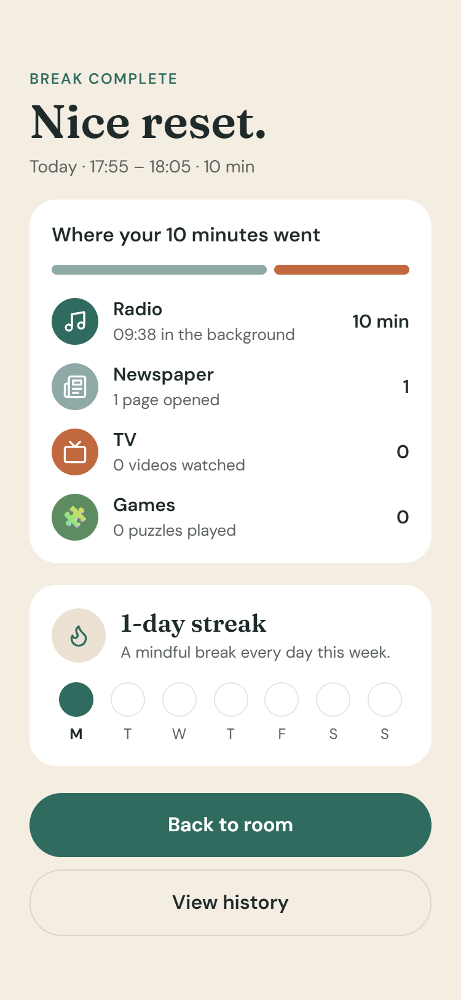
5
Summary
04 · Product
More of the app, at night
News
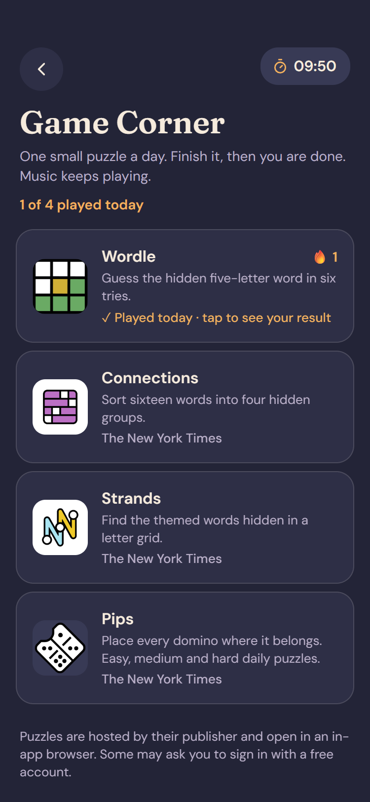
Game Corner
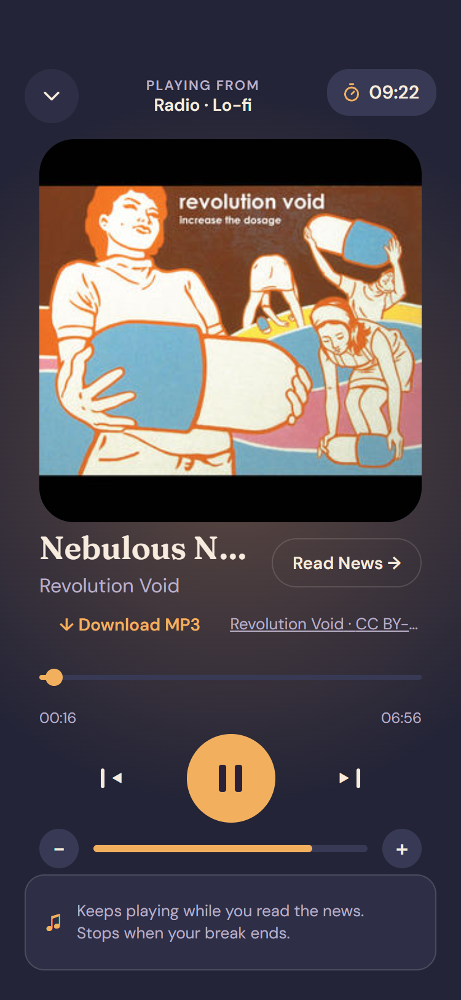
Player · MP3
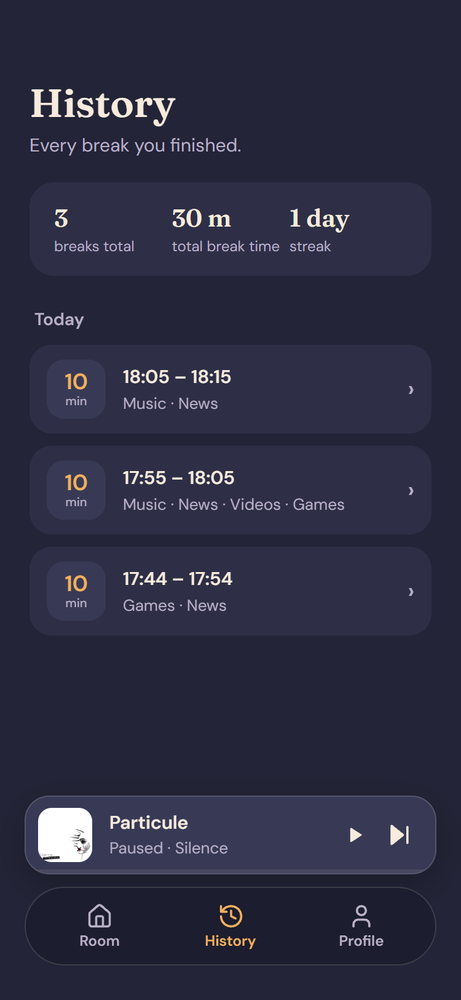
History
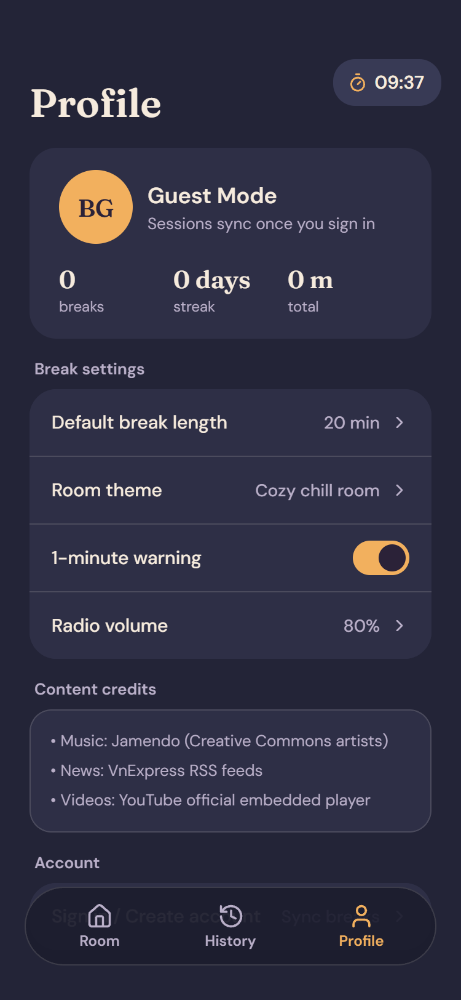
Profile
05 · Quality
What we checked
11/11
Backend tests pass
On a real PostgreSQL
0
Type and lint errors
Checked on every change
18
Acceptance cases
Run on iPhone
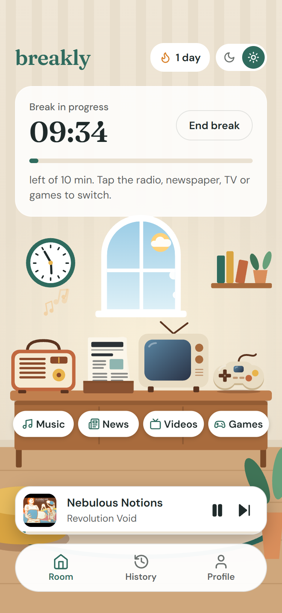
breakly · CO3043 · CC02
Thank you
Questions and feedback are welcome.
Trần Phước Sang · Trần Ngọc Bảo